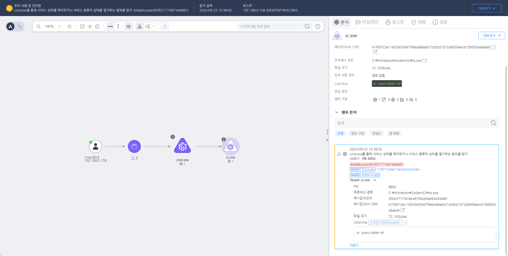

T1007.000.01 시스템 서비스 식별
D3FEND
MITRE ATT&CK 액션을 기준으로 대응 방안을 작성
Detection
Action = "ProcessCreate" AND
TargetProcess = "sc.exe" AND
Cmdline = "sc query" AND
Cmdline != "findstr atxufpk"
Detection(EDR)

https://172.18.10.125:8903/#/analysis/alert/66f10e99002dc79400000001
Response
해당 행위를 수행한 프로세스를 종료합니다.
Mitigations
서비스 목록 접근 제한
- 권한 최소화: 서비스 목록을 열람할 수 있는 권한을 제한합니다. 일반 사용자 및 낮은 권한의 계정은 서비스 목록을 확인할 수 없도록 설정합니다.
- 로컬 그룹 및 관리 권한 제어: 서비스 탐지를 위한 권한이 필요한 경우 로컬 관리자 그룹에 대한 접근을 제한하고, 서비스 계정을 최소화합니다.
보안 솔루션 강화
- EDR/XDR 솔루션을 사용하여 서비스 정보 조회 시 비정상적인 행동을 탐지합니다. 예를 들어,
sc query, tasklist, Get-Service 등의 명령어가 실행될 때 경고를 생성하고, 의심스러운 서비스나 프로세스를 분석합니다.
- Windows Defender 및 타 보안 소프트웨어에서 서비스 정보의 비정상적인 접근을 차단하거나 탐지합니다.
이벤트 로깅 및 감사 정책 강화
- Windows Event Log에서 서비스 변경 및 관련 이벤트(
7045, 7040, 4688)를 모니터링하여 서비스가 비정상적으로 추가되거나 수정된 경우 이를 추적합니다.
- Audit Policy를 통해 시스템에 대한 서비스 변경 및 조회 로그를 활성화하여, 비정상적인 서비스 목록 조회를 탐지할 수 있습니다.
서비스 및 프로세스 모니터링
- 서비스 목록 조회를 포함한 프로세스 및 서비스 변경 모니터링을 활성화하여 시스템에 의도하지 않은 서비스가 추가되었을 때 실시간으로 경고를 받습니다.
- Sysmon을 사용하여
Event ID 10 (Process Access) 등을 모니터링하여 서비스 관련 변화를 감지합니다.
네트워크 보안 및 제한
- RDP (원격 데스크탑 프로토콜) 및 원격 서비스에 대한 접근을 제한하고, MFA (다단계 인증)를 적용하여 서비스에 대한 원격 접근을 어렵게 만듭니다.
- 서비스 권한에 대한 접근을 제한하고, 최소 권한 원칙을 적용하여 공격자가 서비스 정보를 얻기 위해 시스템에 접근하는 것을 방지합니다.
정기적인 보안 점검 및 패치 적용
- 시스템의 서비스 목록 및 구성을 정기적으로 점검하여, 불필요한 서비스가 실행 중인지 확인하고 제거합니다.
- 최신 보안 패치를 적용하여 서비스 관련 취약점이 악용되지 않도록 방지합니다.
Affected Techniques
Action 실행시 함꼐 영향을 받는 다른 Techniqes
| D3FEND |
| D3-SICA System Init Config Analysis |
| D3-PM Platform Monitoring |
| D3-FA File Analysis |